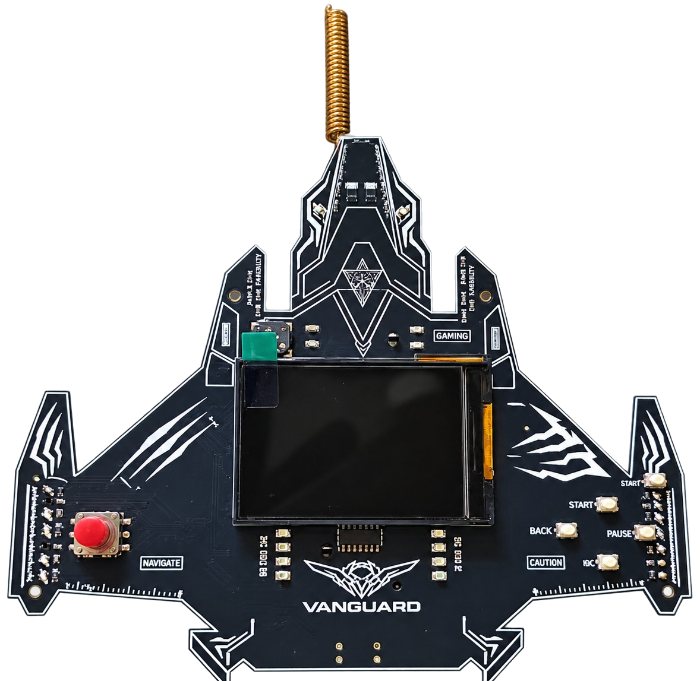

Wired Village/Sysrupt V2
Join a Wi-Fi network. Hack a power plant. Learn ICS/SCADA security.
A complete OT/ICS hacking range that runs on a single ESP32-S3 badge.
The SYSRUPT Portable OT Range V2 is an industrial-cybersecurity training lab that fits on one ESP32-S3 "Vanguard" badge. Flash the badge, join its Wi-Fi, and it becomes the control network of a small simulated plant, a web HMI, a process historian and several real industrial protocols, with 8 CTF challenges across defensive investigation and offensive exploitation.
No cloud, no internet, no extra hardware. Your score and progress show on the badge's 320×240 LCD and survive a reboot.

SYSRUPT-OT-V2-…. Your laptop gets 10.0.1.x; the badge is 10.0.1.1.firefox http://10.0.1.1/ curl -O http://10.0.1.1/toolkit.zip unzip toolkit.zip && cd sysrupt-toolkit-1.0.0 ./bin/sysrupt status # read-only probe of the challenge ports
Be gentle: the ESP32-S3 has no PSRAM and a tiny network stack. One connection at a time, low rate. Aggressive scans make ports read "filtered", not "closed".
8 challenges · 1800 total points · scoreboard on the badge LCD updates automatically. Numbered defensive-first: 01–04 Defensive, 05–08 Offensive.
Start here: Initial Access — Hacking into the IT Server, the IT foothold (robots.txt → /control → login) before pivoting to the OT challenges below.
The guides are spoiler-free, they explain the protocol, the surface and the idea, not the answer.
The badge is the whole network: a Wi-Fi AP at 10.0.1.1 that hosts every service.
| Surface | Port | Challenge |
|---|---|---|
| Web (HMI / intranet / webmail / historian / toolkit) | TCP 80 | #01, #03, #04, #07, #08 entry |
| Modbus/TCP | TCP 502 | #07, #08 |
| OPC-UA-lite | TCP 9005 | #05 |
| GOOSE (training) | UDP 6180 | #06 |
| SNMP | UDP 161 | #02 |
The historian is served under /hist on TCP 80 (its own login + Filter-by-Source SQLi
console), not a separate port; it backs #01.
A dependency-free Python 3.9+ CLI, served by the badge, that speaks the challenge protocols:
./bin/sysrupt help # all command groups ./bin/sysrupt help modbus # one protocol's commands ./bin/sysrupt config set target 10.0.1.1
| Group | For |
|---|---|
| modbus | Reactor challenges (#07, #08) |
| goose | Second Blackout (#06) |
Every result is reported on a four-level ladder, request → ack → observed state change → challenge completion, so you can see exactly how far an action got. Full reference: COMMANDS.md.
The "Vanguard" badge is a custom ESP32-S3 board.
| SoC | ESP32-S3-WROOM-1, 16 MB flash, no PSRAM |
| Display | ST7789, 320×240 landscape |
| Input | 5-way joystick + buttons |
| Programming | USB-C serial (e.g. /dev/ttyACM0) |
| Networking | Wi-Fi AP SYSRUPT-OT-V2-NNN, gateway 10.0.1.1, IPv4 forwarding + NAPT |
No schematic, PCB or CAD files are published for this board. The LoRa radio, LEDs and buzzer on the board are not driven by the firmware.
Flash it. Join the Wi-Fi. Hack the plant.